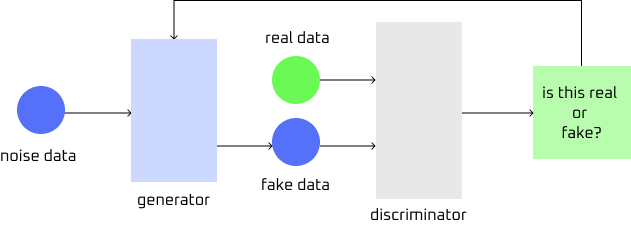

Generative adversarial networks (GAN) are composed of a generator and discriminator that compete against each other and improve together. Unlike the other neural networks that only recognizes or classifies data, GANs generates entirely new data in an attempt to resemble real-world data.
The generator is a deep neural network that creates data by taking random noise as input. This assists in generating realistic datasets and uses patterns to learn the input by adjusting internet paramenters using backpropagation. The discriminator assesses authenticity of the generated data by acting as a binary classifier that compares real and generated data. The discriminator also uses convolutional layers and other relevant architecture when dealing with image data, extracting features and improving the model's ability. By detecting fake samples more accurately with the discriminator, GANs can improve classification and refine parameters.
To train generative adversial network, the gererator first starts with random noisey inputs. The generator then creates fake data samples and transforms the noise into something that looks like real data. The discriminator then receives the fake samples from the generator in addition to real samples from an actual training dataset. The two inputs are then analyzed and the discriminator outputs a probability score between 0 and 1: 1 meaning the data is likely real and 0 meaning the data is likely fake. Adversarial learning then takes place with the probability score taken into consideration. This is also when the discriminator and generator competes against each other. If the discriminator successfully classifies the real or fake data with the correct score, it improves on its job of identifying which data is what. If the generator is able to create fake data that the discriminator marks with a score of 1, the generator receives a positive update and the dicriminator gets penalized. The generator then learns from its successes, improving and creating more convincing fake samples. The discriminator then adapts, updating itself to improve spotting fake data. This competition continously happens, strengthening both generator and discriminator. The goal of the training is for the generator to be able to produce highly effective fakes to the point where the discriminator struggles to distinguish between real and fake data.

Figure: Simplified diagram of a GAN. Image provided by Serena Ngo. See credits for references.
There five different types of GANs with distinguished purposes.
- Vanilla GAN: The simplest type of GAN that contains a generator and discriminator that are both made with multi-layer perceptrons (MLPs). MLPs are a type of feedforward neural network that is capable of distinguishing data that is not lineraly separable.
- Conditional GAN (CGAN): The generator contains an additional conditional parameter to assist in the generation process. With this, the generator produces more specific outputs instead of a random one based on a label.
- Deep Convolutional GAN (DCGAN): This GAN is the most popular types used for image generation. This GAN also implements CNNs instead of MLPs into its training, removing the fully connected layer that is commonly used in CNNs and replacing pooling layers with convolutional stride. This makes the model more efficient and allow for better spatial understanding of images.
- Laplcian Pyramid GAN (LAPGAN): This GAN uses multi-resolution approach to generate images of ultra high quality. The GAN uses multiple generator and discriminators at each layer and CGAN to upscale the results. This allows images to gradually refine in higher quality details, reducint noise and improving clarity.
- Super Resolution GAN (SRGAN): This GAN is designed to increase resolution of low quality images while reducing common image upscaling errors (such as blurriness and pixelation) and preserving details. It also adds finder details to make the image appear more realistic and sharper. SRGAN uses deep neural network with an adversarial loss function to achieve this goal.
Advantages of GANs include synthetic data generation, producing synthetic data that resembles real data which is useful for augmentation and anomaly detection. Results can be considered high qualtiy, especially when upscaling older images. GANs do not require annotated data when training, allowing it to learn unsupervised which saves time and money. Lasly, GANs are very versatile in the various tasks that it can complete.
Since GANs run two neural networks (generator and discriminator), GANs requires extreme computational power and resource intensive. Training instability is also experienced with GANs. There are chances where the generator and discriminator do not converge properly, producing poor-quality outputs. GANs also faces mode collapse where limited variety of data is produced by the generator. This indicates that the generator has failed to capture the full diversity of the training dataset. Ensuring ethical use is also a growing concern since GANs can be used to create fakes images and videos with harmful intent (deep fakes).